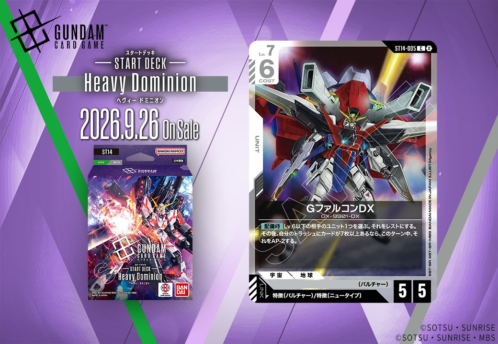
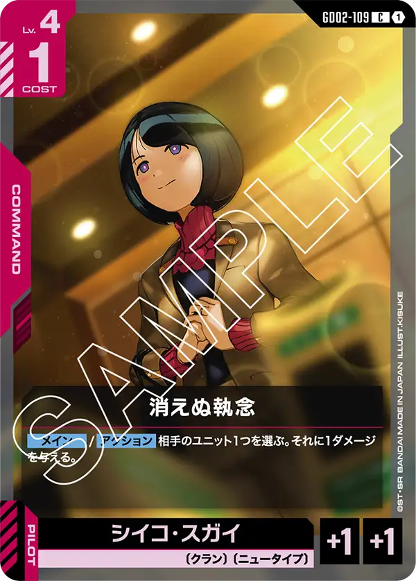

今回は、Generation Pulse(ST14)より収録される「GファルコンDX」(ST14-005)を紹介します。赤のUNITで、特徴に「バルチャー」を持つPILOTとのリンクを備えたカードです。発売日は2026年9月26日となっています。

GファルコンDX (ST14-005)
| 色 | 赤 | タイプ | UNIT |
| Lv | 7 | コスト | 6 |
| AP | 5 | HP | 5 |
| 特徴 | 〔バルチャー〕、〔ニュータイプ〕 | ||
| リンク条件 | 特徴にバルチャーを持つPILOT | ||
効果: 【配備時】Lv.6以下の相手のユニット1つを選ぶ。それをレストにする。その後、自分のトラッシュにカードが7枚以上あるなら、このターン中、それをAP-2する。
GファルコンDX(ST14-005)は、COST6でAP5/HP5の赤ユニット。【配備時】にLv.6以下の相手ユニット1つをレストにし、トラッシュが7枚以上あればそのターン中AP-2を追加できる、条件付き除去寄りの妨害効果を持つ。 自分のトラッシュを7枚以上に増やす手段として、リンク先のバルチャー持ちパイロットに加え、ニャアン(GD03-092)の【リンク時】にデッキを1枚トラッシュへ置く効果が枚数稼ぎに噛み合う。レスト+AP-2はブロッカー持ちの相手ユニットに対して特に有効となる。2026-09-26発売。
関連カード
-
 ニャアン(GD03-092)赤系デッキ内採用率11.8% (547デッキ)
ニャアン(GD03-092)赤系デッキ内採用率11.8% (547デッキ) -
 ハマーン・カーン(GD02-091)赤系デッキ内採用率1.1% (53デッキ)
ハマーン・カーン(GD02-091)赤系デッキ内採用率1.1% (53デッキ) -
 アマテ・ユズリハ（マチュ）(ST06-009)赤系デッキ内採用率0.7% (33デッキ)
アマテ・ユズリハ（マチュ）(ST06-009)赤系デッキ内採用率0.7% (33デッキ) -
 ハサウェイ・ノア(ST08-010)赤系デッキ内採用率0.3% (16デッキ)
ハサウェイ・ノア(ST08-010)赤系デッキ内採用率0.3% (16デッキ) -

消えぬ執念(GD02-109)赤系デッキ内採用率0.1% (3デッキ) -
 ガロード・ラン＆ティファ・アディール(GD02-094)紫系デッキ内採用率0% (1デッキ)
ガロード・ラン＆ティファ・アディール(GD02-094)紫系デッキ内採用率0% (1デッキ) -
ガロード・ラン＆ティファ・アディール(GD02-094_p1)紫系デッキ内採用率0% (0デッキ)
-
家族への想い(GD02-115)紫系デッキ内採用率0% (0デッキ)
-
仲間意識(GD02-116)紫系デッキ内採用率0% (0デッキ)
-
 ジャミル・ニート(GD03-096)紫系デッキ内採用率0% (1デッキ)
ジャミル・ニート(GD03-096)紫系デッキ内採用率0% (1デッキ)